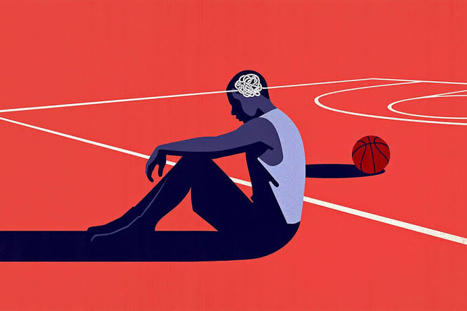

วิชาพลศึกษา

จิตวิทยาการกีฬาศึกษาเกี่ยวกับกระบวนการคิด อารมณ์ และพฤติกรรมของนักกีฬาที่มีผลต่อความสามารถในการแข่งขัน ความกดดันจากผู้ชม ความคาดหวัง และความกลัวความล้มเหลวล้วนเป็นอุปสรรคทางจิตใจที่นักกีฬาต้องก้าวข้าม เทคนิคการฝึกสมาธิ การสร้างภาพในใจ (Visualization) และการตั้งเป้าหมายระยะสั้นจึงเป็นเครื่องมือสำคัญที่ช่วยให้นักกีฬาสามารถควบคุมสติ รักษาความนิ่ง และดึงศักยภาพสูงสุดออกมาใช้ได้ในนาทีวิกฤตของการแข่งขันระดับสูง